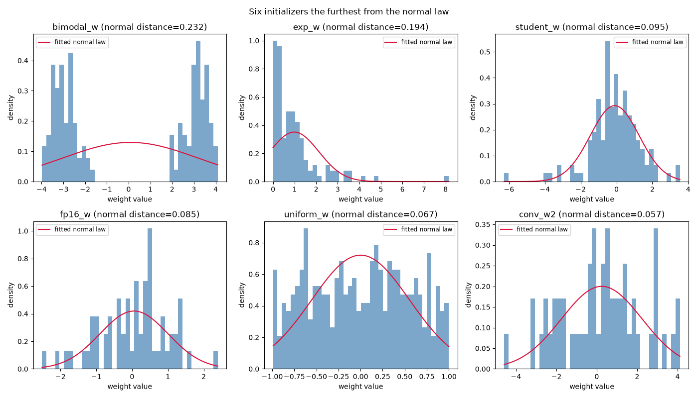
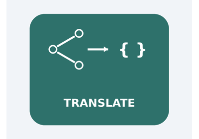

Note
Go to the end to download the full example code.
Statistics on the weights of an ONNX model#
This example walks through every initializer of an ONNX model whose rank is greater than two (typically convolution or attention weights) and computes a handful of descriptive statistics for each of them:
min / max — the extreme values stored in the tensor,
median — the middle value once the weights are sorted,
mean — the arithmetic average,
skewness — the standardized third moment, measuring the symmetry of the distribution.
0means the weights are symmetric around their mean; a non-zero value reveals an asymmetric tail.excess kurtosis — the standardized fourth moment minus three, measuring how heavy the tails are compared to the normal law.
0matches the normal law; a positive value flags heavy tails.distance to normal law — a Kolmogorov-Smirnov style distance between the empirical distribution of the weights and the normal law \(\mathcal{N}(\mu, \sigma^2)\) fitted on the same weights. A value close to
0means the weights are well described by a normal distribution; larger values indicate a stronger departure from normality.
By default the script builds a small dummy model with a couple of 3D and 4D initializers so that it runs out of the box. An existing model can be analyzed instead by passing its path on the command line:
python plot_initializer_statistics.py --model model.onnx
The initializer values are read through
onnx_light.onnx.numpy_helper.to_array(), which relies on the
ml_dtypes fallback mechanism to materialize tensors stored with dtypes
that have no native NumPy equivalent (float16, bfloat16,
float8 …). The statistics are always computed in float64 so the
same code path works for every element type.
Finally, the six initializers that depart the most from the normal law (largest distance) are plotted: their histogram is drawn alongside the probability density function of the normal law fitted on the same weights, so the departure from normality can be seen at a glance.
from __future__ import annotations
import argparse
import math
import matplotlib.pyplot as plt
import numpy as np
import onnx_light.onnx as onnxl
import onnx_light.onnx.helper as oh
import onnx_light.onnx.numpy_helper as onh
from onnx_light.onnx import load
# Vectorised normal CDF helper built once so it is not recreated on every call.
_erf = np.vectorize(math.erf)
Command line#
--model is optional: when omitted a dummy model is generated so the
example is self-contained.
def parse_args() -> argparse.Namespace:
"""Parses the command-line arguments.
Returns:
The parsed arguments with a single ``model`` attribute holding the
path to an ONNX model, or ``None`` when the dummy model must be
generated.
"""
parser = argparse.ArgumentParser(description=__doc__)
parser.add_argument(
"--model",
default=None,
help=(
"Path to an existing ONNX model to analyze. "
"When omitted, a dummy model is generated."
),
)
parsed, _ = parser.parse_known_args()
return parsed
Dummy model#
The generated model only exists to carry a few initializers whose rank is greater than two. The graph itself does not need to be runnable for the statistics to be computed.
def make_dummy_model() -> onnxl.ModelProto:
"""Returns a dummy model with a few initializers of rank greater than two.
Returns:
An :class:`onnx_light.onnx.ModelProto` carrying several 3D and 4D
initializers alongside a 1D bias to illustrate the rank filtering.
"""
rng = np.random.default_rng(0)
initializers = [
# A convolution-like weight drawn from a normal law.
onh.from_array(rng.standard_normal((8, 4, 3, 3)).astype(np.float32), name="conv_w"),
# A weight drawn from a uniform law, further from normality.
onh.from_array(rng.uniform(-1.0, 1.0, (16, 8, 3)).astype(np.float32), name="uniform_w"),
# A half-precision weight to exercise the ml_dtypes fallback.
onh.from_array(rng.standard_normal((4, 4, 4)).astype(np.float16), name="fp16_w"),
# An exponential weight, strongly asymmetric (heavy right tail).
onh.from_array(rng.exponential(1.0, (8, 4, 4)).astype(np.float32), name="exp_w"),
# A heavy-tailed weight drawn from a Student's t law.
onh.from_array(rng.standard_t(3, (8, 4, 4)).astype(np.float32), name="student_w"),
# A bimodal weight, clearly non-normal.
onh.from_array(
np.concatenate(
[rng.normal(-3.0, 0.5, (4, 4, 4)), rng.normal(3.0, 0.5, (4, 4, 4))]
).astype(np.float32),
name="bimodal_w",
),
# A second normal weight with a different scale.
onh.from_array((2.0 * rng.standard_normal((6, 3, 3))).astype(np.float32), name="conv_w2"),
# A 1D bias, ignored because its rank is not greater than two.
onh.from_array(rng.standard_normal((8,)).astype(np.float32), name="bias"),
]
graph = oh.make_graph([], "dummy_stats_graph", [], [], initializer=initializers)
return oh.make_model(graph, opset_imports=[oh.make_opsetid("", 18)], ir_version=9)
Statistics#
The distance to the normal law is the Kolmogorov-Smirnov statistic: the
largest absolute gap between the empirical cumulative distribution of the
weights and the cumulative distribution of the normal law fitted on those
same weights. It is computed without any extra dependency by evaluating
the normal CDF through math.erf().
def distance_to_normal_law(values: np.ndarray) -> float:
"""Returns the Kolmogorov-Smirnov distance to a fitted normal law.
The normal law :math:`\\mathcal{N}(\\mu, \\sigma^2)` is fitted on
``values`` using their empirical mean and standard deviation, and the
returned value is the maximum absolute difference between the empirical
cumulative distribution function and the normal one.
Args:
values: The tensor values as a flat array.
Returns:
The distance in ``[0, 1]``; ``0.0`` for a degenerate distribution
with a null standard deviation.
"""
flat = np.sort(np.asarray(values, dtype=np.float64).ravel())
n = flat.size
if n == 0:
return 0.0
mean = float(flat.mean())
std = float(flat.std())
if std == 0.0:
return 0.0
# Normal cumulative distribution function evaluated at every value.
scaled = (flat - mean) / (std * math.sqrt(2.0))
normal_cdf = 0.5 * (1.0 + _erf(scaled))
# Empirical cumulative distribution function bracketing each value.
upper = np.arange(1, n + 1, dtype=np.float64) / n
lower = np.arange(0, n, dtype=np.float64) / n
return float(np.maximum(np.abs(upper - normal_cdf), np.abs(normal_cdf - lower)).max())
def skewness(values: np.ndarray) -> float:
"""Returns the sample skewness of ``values``.
Skewness is the standardized third central moment; it measures the
asymmetry of the distribution. A value of ``0.0`` means the weights
are symmetric around their mean, a positive value means the right tail
is heavier and a negative value means the left tail is heavier.
Args:
values: The tensor values as a flat array.
Returns:
The skewness; ``0.0`` for a degenerate distribution with a null
standard deviation.
"""
flat = np.asarray(values, dtype=np.float64).ravel()
if flat.size == 0:
return 0.0
centered = flat - flat.mean()
std = float(centered.std())
if std == 0.0:
return 0.0
return float(np.mean(centered**3) / std**3)
def excess_kurtosis(values: np.ndarray) -> float:
"""Returns the excess kurtosis of ``values``.
Excess kurtosis is the standardized fourth central moment minus three,
so that a normal law has an excess kurtosis of ``0.0``. A positive
value indicates heavier tails (and a sharper peak) than the normal
law, which is the heavy-tail behaviour of interest here.
Args:
values: The tensor values as a flat array.
Returns:
The excess kurtosis; ``0.0`` for a degenerate distribution with a
null standard deviation.
"""
flat = np.asarray(values, dtype=np.float64).ravel()
if flat.size == 0:
return 0.0
centered = flat - flat.mean()
variance = float(np.mean(centered**2))
if variance == 0.0:
return 0.0
return float(np.mean(centered**4) / variance**2 - 3.0)
def compute_statistics(tensor: onnxl.TensorProto) -> dict[str, float]:
"""Returns the descriptive statistics of an initializer.
Args:
tensor: The initializer to analyze.
Returns:
A mapping with the ``min``, ``max``, ``median``, ``mean``,
``skewness``, ``excess_kurtosis`` and ``normal_distance`` of the
tensor values.
"""
values = onh.to_array(tensor).astype(np.float64)
return {
"min": float(values.min()),
"max": float(values.max()),
"median": float(np.median(values)),
"mean": float(values.mean()),
"skewness": skewness(values),
"excess_kurtosis": excess_kurtosis(values),
"normal_distance": distance_to_normal_law(values),
}
Main#
The model is loaded (or generated), then every initializer with a rank greater than two is analyzed and its statistics printed.
args = parse_args()
if args.model:
print(f"Loading model {args.model!r}.")
model = load(args.model)
else:
print("No model provided, generating a dummy model.")
model = make_dummy_model()
print()
header = (
f"{'name':<16} {'rank':>4} {'min':>10} {'max':>10} "
f"{'median':>10} {'mean':>10} {'skew':>10} {'kurtosis':>10} {'normal':>10}"
)
print(header)
print("-" * len(header))
n_analyzed = 0
analyzed = []
for init in model.graph.initializer:
rank = len(init.dims)
if rank <= 2:
continue
n_analyzed += 1
stats = compute_statistics(init)
analyzed.append((init, stats))
print(
f"{init.name:<16} {rank:>4} "
f"{stats['min']:>10.4f} {stats['max']:>10.4f} "
f"{stats['median']:>10.4f} {stats['mean']:>10.4f} "
f"{stats['skewness']:>10.4f} {stats['excess_kurtosis']:>10.4f} "
f"{stats['normal_distance']:>10.4f}"
)
print()
print(f"Analyzed {n_analyzed} initializer(s) with more than two dimensions.")
No model provided, generating a dummy model.
name rank min max median mean skew kurtosis normal
--------------------------------------------------------------------------------------------------
conv_w 4 -3.1063 3.0660 -0.0765 -0.0306 0.0584 0.0523 0.0347
uniform_w 3 -0.9902 0.9990 0.0243 0.0003 -0.0175 -1.1359 0.0670
fp16_w 3 -2.5156 2.3926 0.1517 0.0522 -0.3202 0.0315 0.0852
exp_w 3 0.0005 8.1510 0.6809 0.9834 2.8649 12.0503 0.1936
student_w 3 -6.2709 3.5370 -0.0619 -0.1006 -0.7882 3.2577 0.0952
bimodal_w 3 -3.9799 4.0964 0.1538 0.0778 0.0026 -1.8908 0.2316
conv_w2 3 -4.5865 4.1164 0.3541 0.2464 -0.0883 -0.5103 0.0571
Analyzed 7 initializer(s) with more than two dimensions.
Plotting the least normal initializers#
The six initializers whose distance to the normal law is the largest are plotted: their histogram (as a density) is compared to the probability density function of the normal law \(\mathcal{N}(\mu, \sigma^2)\) fitted on the same weights. The wider the gap between the bars and the curve, the less normal the weights are.
least_normal = sorted(analyzed, key=lambda item: item[1]["normal_distance"], reverse=True)[:6]
fig, axes = plt.subplots(2, 3, figsize=(14, 8))
for ax, (init, stats) in zip(axes.ravel(), least_normal):
values = onh.to_array(init).astype(np.float64).ravel()
ax.hist(values, bins=40, density=True, color="steelblue", alpha=0.7)
mean = float(values.mean())
std = float(values.std())
if std > 0.0:
grid = np.linspace(values.min(), values.max(), 200)
pdf = np.exp(-0.5 * ((grid - mean) / std) ** 2) / (std * math.sqrt(2.0 * math.pi))
ax.plot(grid, pdf, color="crimson", label="fitted normal law")
ax.legend(loc="best", fontsize="small")
ax.set_title(f"{init.name} (normal distance={stats['normal_distance']:.3f})")
ax.set_xlabel("weight value")
ax.set_ylabel("density")
# Hide any unused axes when fewer than six initializers are available.
for ax in axes.ravel()[len(least_normal) :]:
ax.set_visible(False)
fig.suptitle("Six initializers the furthest from the normal law")
fig.tight_layout()

Total running time of the script: (0 minutes 0.342 seconds)
Related examples

translate: turn an ONNX model back into Python code
Gallery generated by Sphinx-Gallery
Example last updated
- Date:
2026-08-22